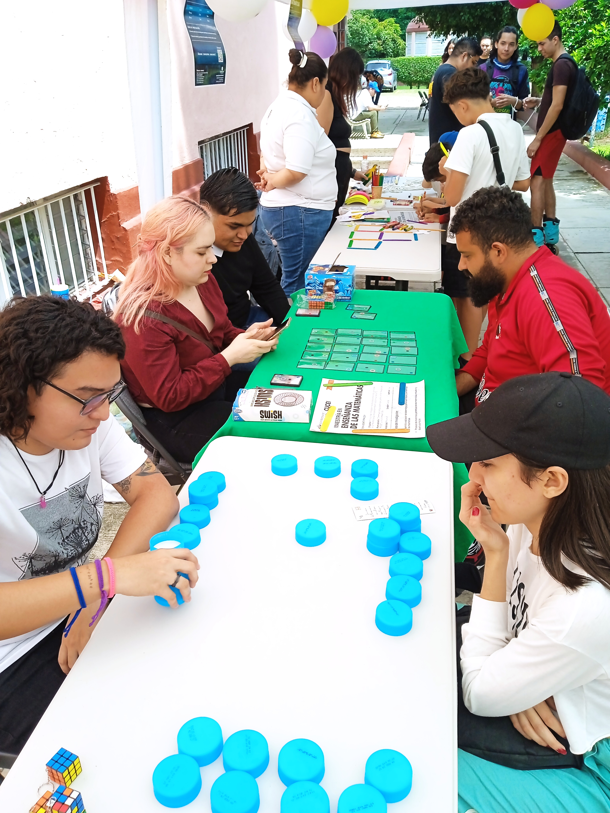
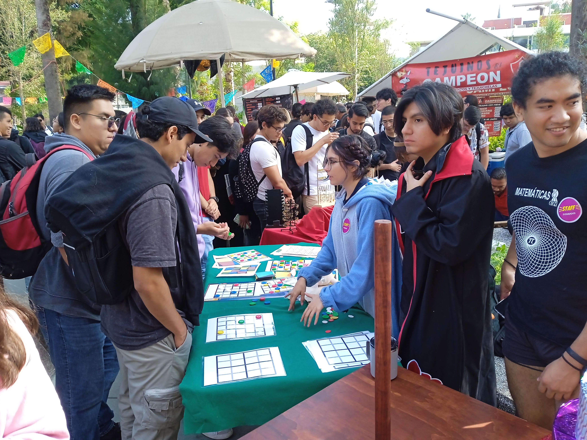
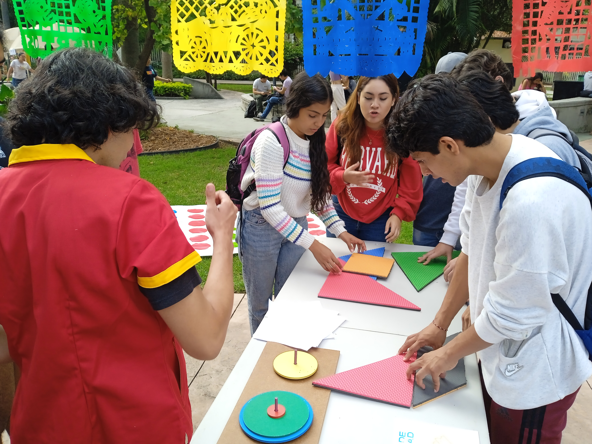

Las matemáticas están en todas partes
Muchas veces caminamos por la ciudad sin notar que existen estructuras matemáticas en edificios, calles, sombras, patrones, mosaicos y señales urbanas.

Juegos matemáticos interactivos
Participantes exploran conceptos matemáticos mediante dinámicas y juegos de estrategia con materiales manipulativos.

Divulgación matemática
Actividades de convivencia donde estudiantes y visitantes descubren las matemáticas de forma cercana y participativa.

Geometría y construcción
Exploración de figuras, patrones y formas geométricas mediante actividades prácticas y materiales didácticos.